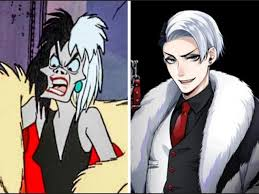
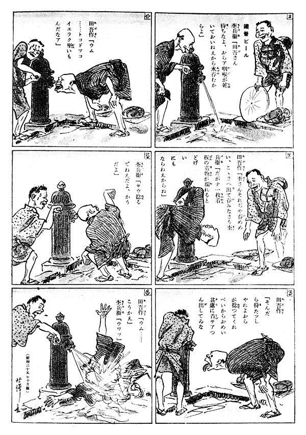

El verdadero origen del anime
La batalla del mono y el cangrejo: hecho por Seitaro Kitayama en 1917.La historia del anime, el género de animación de origen japonés, comienza en el siglo XX, con una serie de cortometrajes similares a los encontrados en otros países como Estados Unidos, Rusia, Alemania, Francia, entre otros. Se descubrió que la primera animación japonesa fue en 1907, en el que se puede observar la participación de un niño marinero. La compañía Tennenshoku Katsudo Shashin (Tenkatsu) es quien reacciona primero, encargando en 1916 al dibujante de manga Oten Shimokawa una película del género.
El anime se reconoce por su variedad de géneros, su estilo artístico único, y por lo profundo y emocional de sus historias. Este se divide en géneros: aventura, ciencia ficción, historias para niños, romance, fantasía medieval, eróticos (hentai) y varios otros. El anime es una forma de arte expresamente comercial, y la mayoría del anime es producido para audiencias muy específicas con categorías bien definidas para los géneros shonen (muchachos) y shojo (chicas), así como para adolescentes y adultos.
El anime es conocido por su animación la cual es muy particular comparada con la que tienen los dibujos animados occidentales tal como los de Disney. Los estudios en los que se realiza anime han perfeccionado técnicas para utilizar la menor cantidad de cuadros de animación por segundo que sea posible (8 cuadros por segundo), tales como mover o repetir escenarios, imágenes de los personajes que se deslizan por la pantalla, y diálogos que impliquen animar únicamente las bocas mientras que el resto de la pantalla permanece estática. Otros argumentan que el mejor anime debe acentuar la dirección sofisticada sobre la animación actual (movimiento del personaje), proporcionando una ilusión de movimiento cuando en realidad no lo hay.
En la década de 1930, la animación se convirtió en un formato alternativo de la narración de cuentos. La falta de visión de actores occidentales, por ejemplo, hace casi imposible dirigir las películas establecidas en Europa, América, o mundos de fantasía, que naturalmente no tienen la participación de Japón. La animación permite a los artistas crear personajes y entornos. Taro Melocotón, el guerrero divino de los mares: el primer largometraje de anime con audio y voces realizado en 1943. El éxito de Disney en Blanca Nieves influyó a los animadores japoneses. Osamu Tezuka adoptó y simplificó muchas técnicas de animación de Disney para reducir los costos y el número de marcos en la producción. Esta fue la intención de ser una medida temporal a fin de que pueda producir el material en un apretado programa de animación con un personal sin experiencia.
Durante la década de 1970, hubo un aumento en el crecimiento de la popularidad del manga, que son a menudo más tarde animados, especialmente los de Osamu Tezuka, que ha sido denominado una "leyenda" y el "dios del manga". Su trabajo y el de otros pioneros en el campo, inspirados en características y géneros que son elementos fundamentales de anime en el día de hoy. El género del robot gigante (conocido como "Mecha" fuera de Japón), por ejemplo, se concretó en virtud de Tezuka, desarrollado en el género en virtud del Super Robot de Go Nagai y otros, y se revolucionó a finales de la década por Yoshiyuki Tomino que desarrolló realmente el género de los robots del anime, como la serie Gundam y Macross se convirtieron en clásicos instantáneos en la década de 1980, y el género del robot de anime sigue siendo una de las más comunes en el Japón y en todo el mundo el día de hoy. En esta misma década, el anime se hizo más aceptado en la corriente principal en Japón (aunque menos que el manga), y experimentó un auge en la producción. Tras algunas adaptaciones de anime de éxito en los mercados extranjeros, el anime adquirió una mayor aceptación en los mercados en la década de 1990 y aún más a partir del 2000.